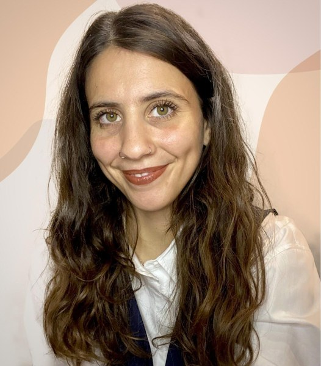

Tempio Malatestiano
Connecting Cultural Heritage, Semantic Web and Artificial Intelligence

Abstract
This project explores the intersection of Semantic Web technologies, Artificial Intelligence and Cultural Heritage, focusing on the Tempio Malatestiano in Rimini, Italy. By combining SPARQL queries and Large Language Models (LLMs), the project identifies and addresses selected information gaps in ArCo, the Italian Cultural Heritage Knowledge Graph. The SPARQL exploration showed that ArCo describes the monument mainly through cataloguing data, while it does not record who designed it or who commissioned it. I used ChatGPT and Gemini, with three prompting techniques, to research this missing knowledge, and then translated the selected information into RDF triples based on ArCo's ontologies, providing a richer representation of the monument's historical context, architectural authorship and commission.
Introduction
This project was developed within the KE4H (Knowledge Engineering for the Humanities) course at the University of Bologna.
The main objective is to explore how SPARQL queries and LLMs can be combined to enrich existing cultural heritage knowledge graphs with additional meaningful information. In particular, the project investigates how semantic technologies and AI-assisted approaches can help identify gaps in structured data and contribute to a more complete representation of cultural heritage.
As the reference knowledge graph, I selected ArCo – Architecture of Knowledge, the official ontology network and RDF dataset for the Italian cultural heritage domain, developed by the Central Institute for Cataloguing and Documentation (ICCD) in collaboration with the National Research Council of Italy (CNR).
ArCo represents cultural properties and their related information through a network of interconnected ontologies. Its RDF data can be explored through SPARQL queries, which allow users to retrieve, analyse and connect information about cultural heritage assets.
The Cultural Heritage: Tempio Malatestiano
The project focuses on the Tempio Malatestiano, located in the historic centre of Rimini, in the Emilia-Romagna region of Italy, and today the city's cathedral. Originally a Franciscan church dedicated to Saint Francis, the building was transformed during the fifteenth century under the patronage of Sigismondo Pandolfo Malatesta, Lord of Rimini.
The architectural redesign is closely associated with Leon Battista Alberti, one of the leading architects and humanist thinkers of the Italian Renaissance. The monument is renowned for its marble exterior, inspired by classical Roman architecture, which reinterprets the language of ancient triumphal arches. Its artistic heritage also includes the sculptural decorations by Agostino di Duccio, the fresco by Piero della Francesca depicting Sigismondo Malatesta in prayer before Saint Sigismund, and a painted Crucifix attributed to Giotto.
Beyond its architectural and artistic value, the Tempio Malatestiano is an important expression of Renaissance humanism and political self-representation. Conceived as both a religious building and a commemorative monument, it reflects Sigismondo Malatesta's ambition to celebrate his family, his political prestige and his relationship with Isotta degli Atti.
The combination of classical architecture, Christian imagery, humanistic culture and dynastic symbolism makes the Tempio Malatestiano a particularly interesting case study for exploring how complex historical and cultural information can be represented through semantic technologies.
Project Focus and Objectives
Starting from the existing ArCo representation of the Tempio Malatestiano, the project identifies information that could be added to the knowledge graph. Particular attention is given to the monument's architectural authorship and historical commission: the role of Leon Battista Alberti and the patronage of Sigismondo Pandolfo Malatesta.
The methodology combines SPARQL-based data exploration, historical research and LLM-assisted knowledge extraction, comparing the answers of ChatGPT and Gemini across three prompting techniques. The resulting information is translated into RDF statements using the appropriate ArCo ontological properties, with the aim of improving the semantic richness and contextual completeness of the existing representation.
Through this process, the project shows how Semantic Web technologies and AI tools can contribute to the documentation, interpretation and accessibility of Italian cultural heritage.
Project Author

Sofia Bianchini – Project Author
Language, Society and Communication – University of Bologna
Repository: github.com/sofiabianchiniweb/KE4H_Project